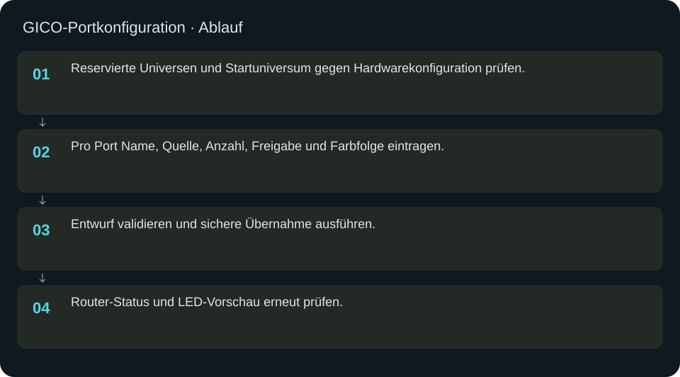
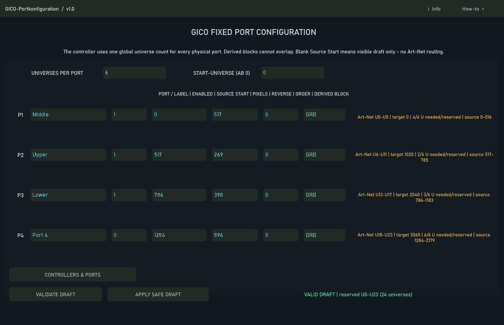

GICO-Portkonfiguration
GICO verwendet feste gleich große Universenblöcke pro physischem Port.
In welcher Reihenfolge?
- Reservierte Universen und Startuniversum gegen Hardwarekonfiguration prüfen.
- Pro Port Name, Quelle, Anzahl, Freigabe und Farbfolge eintragen.
- Entwurf validieren und sichere Übernahme ausführen.
- Router-Status und LED-Vorschau erneut prüfen.


Schritt für Schritt
Reserve ist nicht Bedarf
Ein RGB-Universum transportiert 170 vollständige LEDs mit 510 Kanälen. 299 LEDs benötigen zwei Universen. Wenn die Hardware vier pro Port reserviert, bleibt der nächste Port trotzdem vier Universen weiter. Nicht belegte Reserve bedeutet keinen Fehler.
Beispiel
Für einen neuen Entwurf erst die tatsächliche GICO-Portreserve ablesen. Dann zum Beispiel Quelle 0, Anzahl 299, reverse 0, RGB eintragen. Erst prüfen und anwenden; Controller/Ports ermöglicht die alternative unabhängige Portstruktur, wenn die Hardware sie unterstützt.
Eingaben & Beispiele
| Feld | Bedeutung | Beispiel |
|---|---|---|
universes_per_port | Fester Reservierungsblock pro Hardwareport; nicht nur aktueller Bedarf. | 4 |
first_universe | Erstes Art-Net-Universum ab 0. | 0 |
p1_label | Lesbarer Name dieses physischen Ports. | Front links |
p1_enabled | Portfreigabe 0/1. | 0 |
p1_source | Erste globale Quell-LED; leer = unzugeordnet. | 0 |
p1_count | Anzahl der LED-Plätze auf diesem Port. | 299 |
p1_reverse | Quellreihenfolge umkehren: 0/1. | 0 |
p1_order | Netzwerk-Farbfolge des Ports. | RGB |
p2_label | Lesbarer Name dieses physischen Ports. | Front links |
p2_enabled | Portfreigabe 0/1. | 0 |
p2_source | Erste globale Quell-LED; leer = unzugeordnet. | 0 |
p2_count | Anzahl der LED-Plätze auf diesem Port. | 299 |
p2_reverse | Quellreihenfolge umkehren: 0/1. | 0 |
p2_order | Netzwerk-Farbfolge des Ports. | RGB |
p3_label | Lesbarer Name dieses physischen Ports. | Front links |
p3_enabled | Portfreigabe 0/1. | 0 |
p3_source | Erste globale Quell-LED; leer = unzugeordnet. | 0 |
p3_count | Anzahl der LED-Plätze auf diesem Port. | 299 |
p3_reverse | Quellreihenfolge umkehren: 0/1. | 0 |
p3_order | Netzwerk-Farbfolge des Ports. | RGB |
p4_label | Lesbarer Name dieses physischen Ports. | Front links |
p4_enabled | Portfreigabe 0/1. | 0 |
p4_source | Erste globale Quell-LED; leer = unzugeordnet. | 0 |
p4_count | Anzahl der LED-Plätze auf diesem Port. | 299 |
p4_reverse | Quellreihenfolge umkehren: 0/1. | 0 |
p4_order | Netzwerk-Farbfolge des Ports. | RGB |
Numerische Eingaben verwenden einen Punkt als Dezimaltrennzeichen. IPs, Pfade, Quellstarts und Universen zuerst mit der tatsächlichen Installation vergleichen.
Woran erkenne ich Erfolg?
Die erwartete Ansicht öffnet, Status und Vorschau entsprechen der gewählten Aktion, und es erscheint kein Fehler. Änderungen beim nächsten Laden beziehungsweise im Live-Status erneut lesen. Ein erfolgreicher Bildschirmtest beweist weder physische LED-Ausgabe noch korrekte Kameramessung.
Quellennachweis
Dateipfade im Projekt-Repository; die Onlinehilfe gibt keinen allgemeinen Dateisystemzugriff frei.
pixelblaze_mapper/build_gico_port_config_ui.pypixelblaze_mapper/build_port_topology_ui.py
Dialog: /project1/multi_controller_output/gico_port_config/ui_panel